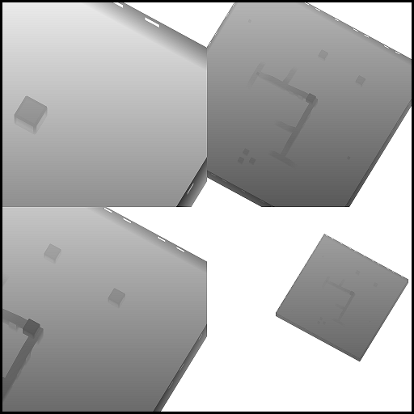
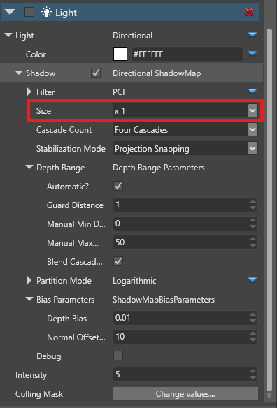

Lights don't cast shadows
If you've enabled shadows on a light in your scene, but it isn't casting shadows, make sure you have enough space in the shadow atlas. You might need to reduce the size of the shadows in the properties of your light components to create room.
For more information about shadows and the shadow atlas, see Graphics - Shadows.
Shadow atlas comparison
| Size: 2x | Size: 1x |
|---|---|
|  |  |
| This light source uses the entirety of the shadow atlas. This means other lights won't cast shadows, as there's no room left in the atlas. | This light source uses one quarter of the shadow atlas. The rest can be allocated to other light sources. |
Reduce the shadow size
In the Scene Editor, select an entity with a light that casts a shadow.
In the Light component properties, under Shadow > Size, reduce the size of the shadow using the drop-down menu.

Alternatively, disable shadows on the light entirely by clearing the Shadows checkbox.
Repeat these steps for as many light entities as you need to create space in the shadow atlas.